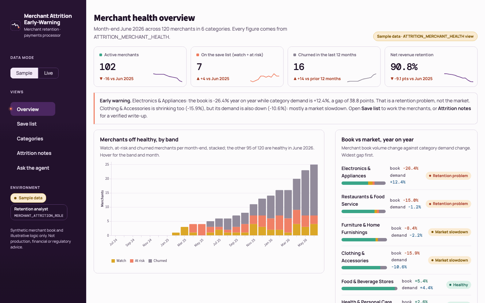
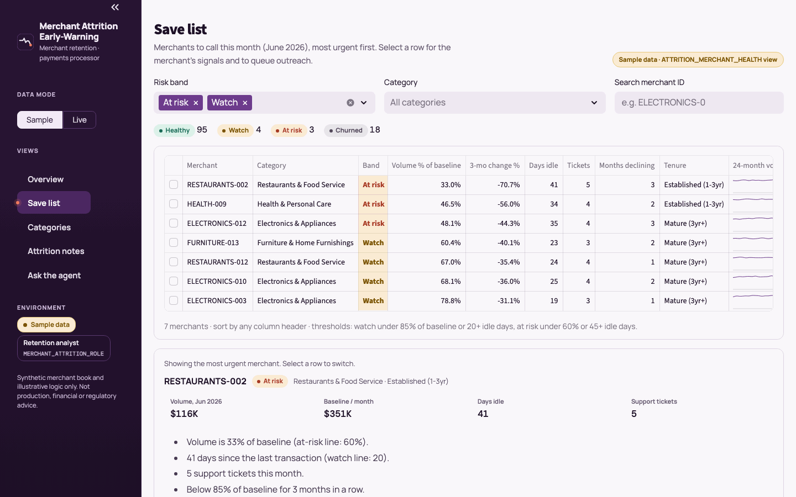
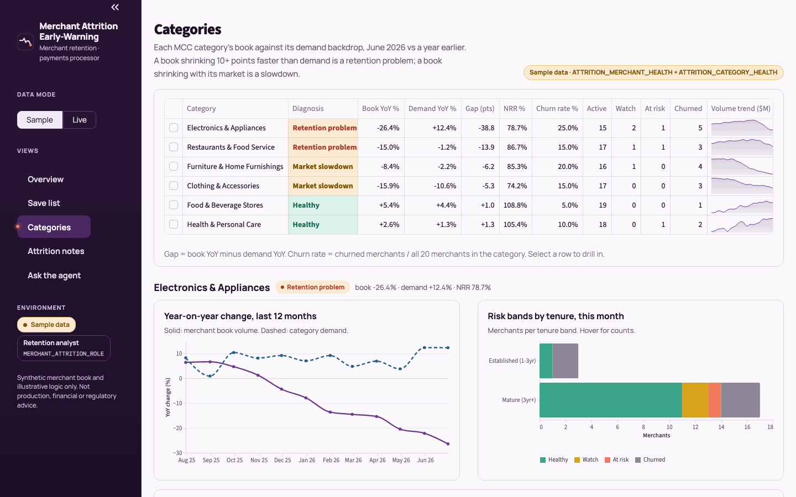
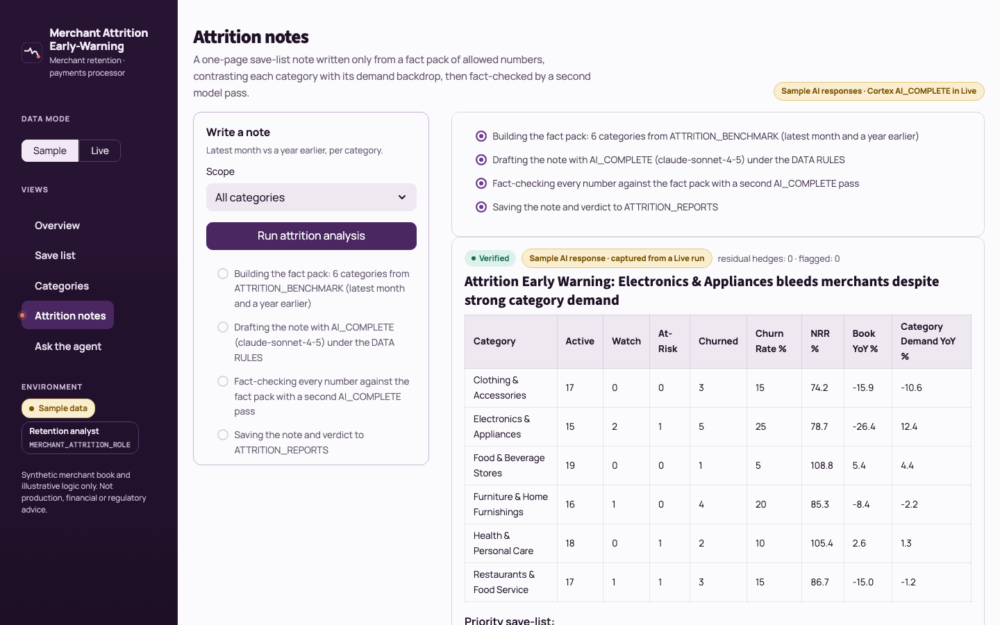
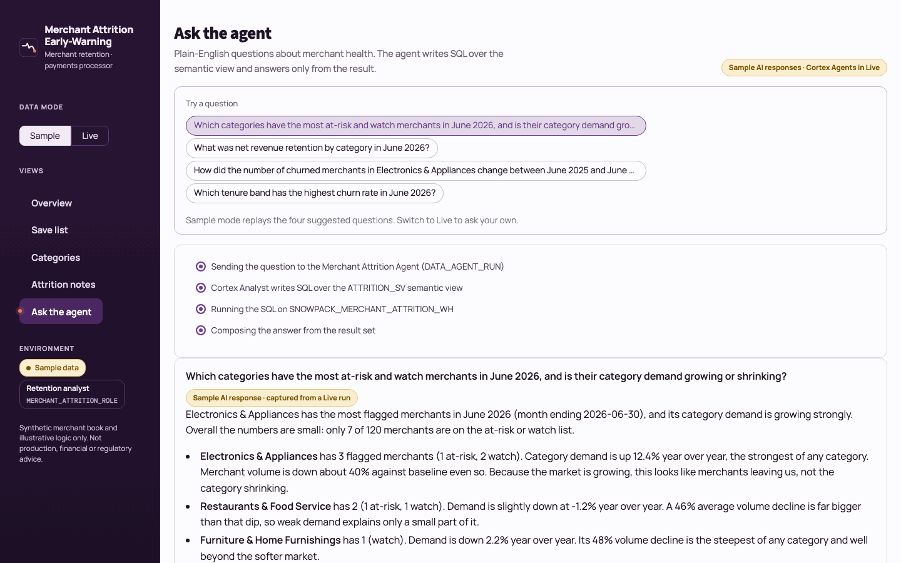

Illustrative example. Synthetic merchant data and illustrative logic only. Not production software, and not financial, credit or regulatory advice. Not an official Snowflake product and not supported by Snowflake Support.
What the retention team sees
Every screen below is the running Streamlit app on its bundled synthetic data. The same app runs Live on Snowflake.

ATTRITION_MERCHANT_HEALTH view and the category demand backdrop in Snowflake.
ATTRITION_OUTREACH table in Live mode.

AI_COMPLETE writes a save-list note from a fact pack of allowed numbers; a second AI_COMPLETE pass checks every figure and badges it Verified or Needs review.
ATTRITION_SV semantic view, and shows the SQL it wrote.How Snowflake does each step
Score every merchant, every month
A Snowflake SQL view, ATTRITION_MERCHANT_HEALTH, compares each merchant's processed volume with its baseline, counts idle days and tickets, and assigns healthy, watch, at risk or churned.
Contrast with category demand
ATTRITION_BENCHMARK rolls merchants up by MCC category, month, risk band and tenure and joins the category demand backdrop, so a shrinking book can be read against its market.
Give it business meaning
The ATTRITION_SV semantic view defines churn rate, net revenue retention and demand growth once, for people and for AI.
Write and check the note
Cortex AI_COMPLETE drafts a save-list note from a fact pack; a second AI_COMPLETE pass verifies every number. Results land in ATTRITION_REPORTS.
Answer follow-up questions
A Cortex Agent with Cortex Analyst writes SQL over the semantic view; the app calls it through DATA_AGENT_RUN.
Run where the data lives
The app is Streamlit; deploy it as Streamlit in Snowflake from the APP_STAGE stage, or run it locally with key-pair auth.
Run it
- No account: open the hosted example, or clone the repository and run
streamlit run app/streamlit_app.py(Sample mode). - Live: run
sql/setup.sqlin a Snowsight worksheet as a role that can create roles, warehouses and databases. It creates a least-privilegeMERCHANT_ATTRITION_ROLEthat owns everything. - Start the app with key-pair auth, or deploy it as Streamlit in Snowflake (steps in the README).
- Optional: swap in real US Census retail sales as the demand backdrop with
sql/census_backdrop.sqland the free Marketplace Financial Data Package. - Remove everything with
sql/cleanup.sql.
Prerequisites
- Snowflake account with Cortex AI functions (
AI_COMPLETE,claude-sonnet-4-5) and Cortex Agents in your region. - A role that can create a role, a database and an XSMALL warehouse, and grant
SNOWFLAKE.CORTEX_USER. - Python 3.11+ with Streamlit 1.50 to run the app locally.